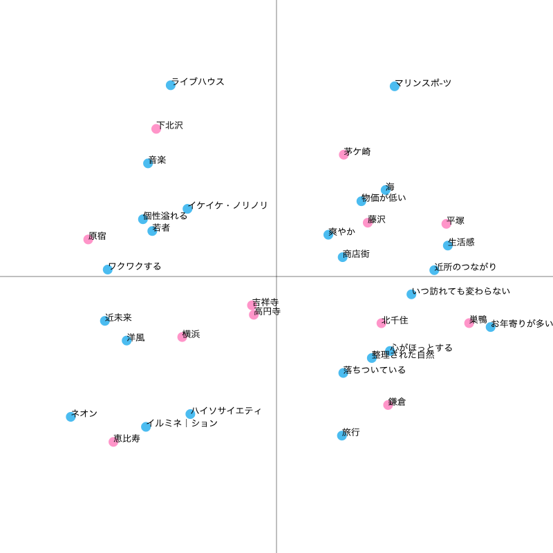
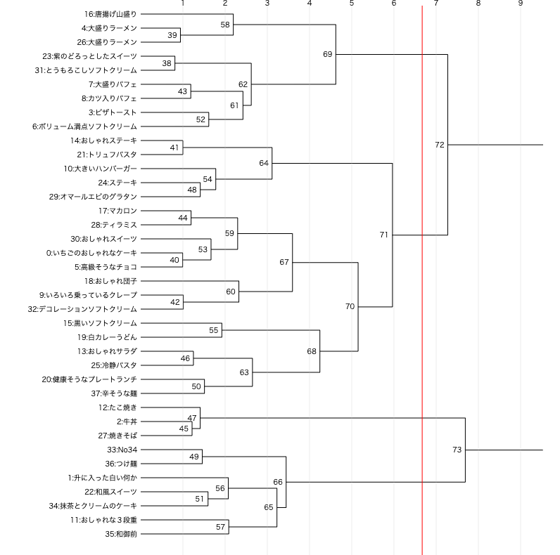
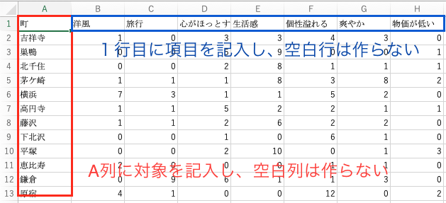

コレスポンデンス分析、クラスター分析
■ポジショニングと分類
自社製品、ブランドのポジションを把握したり、商品の分類を明確にすることによって、
問題点が明確になったり、戦略を立てる手助けになったります。
また、定量的なデータがあることによって、自らの提案に合理性を付加することできます。
■多変量解析
コレスポンデンス分析やクラスター分析は多変量解析とよばる手法の一部で、それぞれは全く別物です。
しかし、両方ともクロス集計表があれば分析ができる、マーケティングで用いられるという利用シーンが似ている
という共通点があるため、同時に学んでみます。
■独自アプリで簡単に学ぶ
これらの分析手法は計算が大変複雑なので、SPSSなど分析ソフトを使って行いますが、
分析ソフトは高額かつ、そこそこ操作が難しいです。
そこで、この授業では独自開発したwebアプリを使って分析プロセスを簡略化し、「計算プロセスではなく、分析プロセス」に主眼をおきます。
コレスポンデンス分析
コレスポンデンス分析は、アンケート調査などのクロス集計結果を散布図にして見やすくする手法です。
商品やブランドなどのポジショニングの表現などに使われます。
コレスポンデンス分析の詳細と練習は
こちら

クラスター分析
クラスター分析は集団の中から似たものを集めてグループ（クラスター）を作って対象を分類するという方法です。
商品やブランドなどの分類などに使われます。
クラスター分析には、階層クラスター分析と非階層クラスター分析の2種類の方法がありますが、ここでは階層クラスター分析を扱います。
クラスター分析の詳細と練習は
こちら

実際にやってみよう
■テンプレを使った楽々モード
アンケート後アプリででクロス集計表を作るので、制約があります。
■■■step1:テンプレを使ってアンケート■■■
使い方動画動画のルール通りにやらないと集計結果がおかしくなります。
--->5段階評価アンケートを使う場合
こちらの
テンプレート
を使ってアンケートを作成します。
--->YesNoアンケートを使う場合
こちらの
テンプレート
を使ってアンケートを作成しします。
■■■step2:結果をダウンロード■■■
アンケート結果をエクセル形式でダウンロードします
動画
■■■step3:クロス集計表を自動作成■■■
step2でダウンロードしたアンケート結果のエクセルを
クロス集計アプリ (doyolab)を使ってクロス集計します。
結果のcsv(UTF-8)ファイルはcross.csvという名前でダウンロードされます。
--->５段階評価テンプレを使った場合は『平均』を選びます。
動画
--->YesNoテンプレを使った場合は『合計』を選びます。
動画
■■■step4:分析■■■
■独自のアンケート形式で行う場合
step1:アンケート
独自にアンケートを行います。
step2:データファイル作成
step2-1:クロス集計表
エクセルを使って、アンケート結果を下図のようなクロス集計表にします。
集計値は平均値、カウントなどにしましょう
クロス集計表は下記のような形で空白列を作らないように作ってください。
また、データも空白のセルをつくらずに必ず値を入力してください。

step2-2:csvファイル(UTF-8)で保存
クロス集計表をcsvファイル(UTF-8)形式で保存します。
UTF-8形式のcsvファイルの作成の方法は
こちら を参照してください。
神奈川大学の学生はOffice365を無料でダウンロードできます。詳しくは
ここを参照してください。
サンプルデータをダウンロードして、自分の集計結果を貼り付け上書き保存すると簡単です。
step3:分析